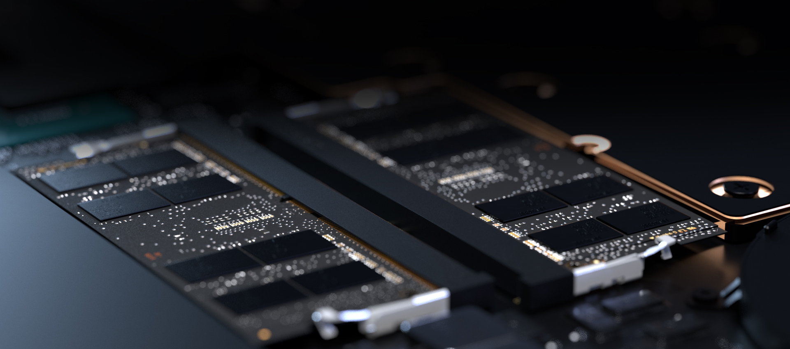

RAZER BLADE 17
US$3,999.99
RAZER BLADE 17
POWER TO THE PROS
The new Razer Blade 17 is more powerful than ever, while still compact in design and improved thermals the Blade 17 empowers Pros with the latest NVIDIA and Intel processors.
Able to withstand performance-demanding AAA games on the go, live-stream video while playing, or create masterpieces the Blade 17 is a powerhouse mobile desktop.
NVIDIA® GeForce RTX™ 30 Series Graphics
The Ultimate Play
NVIDIA® GeForce RTX™ 30 Series Laptop GPUs power the world’s fastest laptops for gamers and creators.
They’re built with Ampere—NVIDIA’s 2nd gen RTX architecture—to give you the most realistic ray-traced graphics and cutting-edge AI features like NVIDIA DLSS.
Plus, Max-Q Technologies unleash the power of AI to make thin, high-performance laptops that are faster and better than ever.
Next-Gen DDR5 (4800MHz) Memory
ENHANCED RESPONSE TIMES
Feel the boost with an increase of 1600MHz compared to DDR4, as you enjoy a quicker, smoother experience when loading applications, running games, and performing other everyday PC tasks.

Ultra-Efficient Vapor Chamber Cooling
OPTIMAL THERMAL PERFORMANCE
All the new-found power the Razer Blade 17 can produce would be meaningless without a thermal performance to match.
Upgraded with more fins, fans, and a larger liquid capacity, the system maximizes its nanoparticle thermal blockers and server-grade components to maximize thermal threshold and squeeze every ounce of FPS out of the laptop.
This system not only allows the laptop to perform at max levels, but also ensures that Razer Blade laptops are able to maintain an incredibly thin form-factor that can’t be found anywhere else.
8 THX® CERTIFIED MULTI-DRIVER SPEAKERS
CINEMATIC, HIGH-FIDELITY SOUND
Upgraded with 8 new speakers, 4 tweeters and 4 subwoofers, the Razer Blade 17 promises a full-range audio experience worthy of the big screen.
Supported by THX Spatial Audio, its advanced 7.1 surround sound provides pinpoint positional accuracy even when using headphones—delivering immersive, lifelike audio for stereo and multi-channel content alike.

POWERED BY RAZER CHROMA™ RGB
With 16.8 million colors, countless patterns, dynamic in-game lighting effects—experience full RGB customization and deeper immersion with the world’s largest lighting ecosystem for gaming devices.
Supporting a growing list of thousands of devices and hundreds of games & applications, take it to the next level with advanced features such as Chroma Studio, Visualizer, Connect and Workshop.
PRODUCE LIKE A PRO
For a limited time get a one-year license of FL Studio Producer Edition with the purchase of any Razer laptop